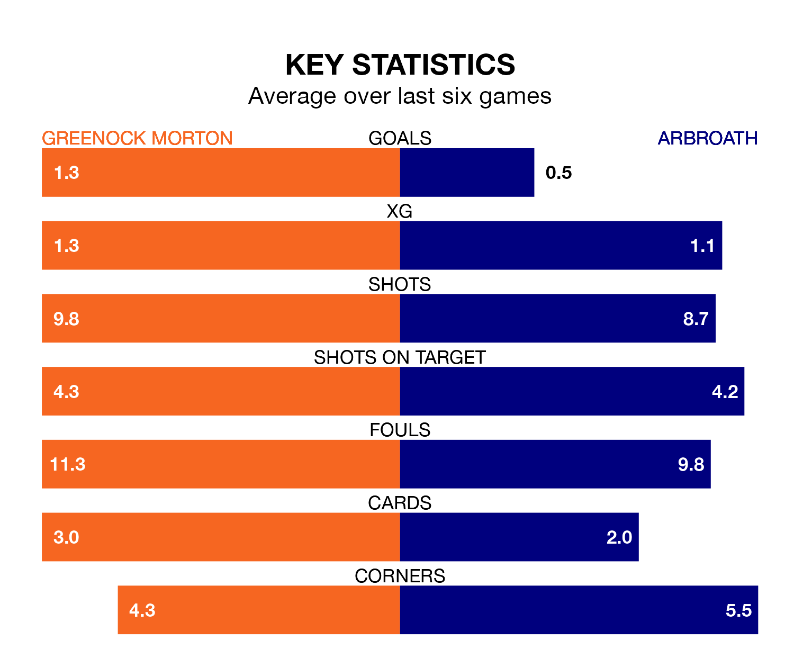

Greenock Morton are heavy favourites to keep all three points at home in Saturday's kick-off against Arbroath.
The Ton, who sit fifth in the Championship with 20 games played, are priced at 1.6 to seal victory at Cappielow Park.
Sitting five places and eight points behind them in the table, Arbroath are 4.0 to win with *Betting Company*, while the draw is at 3.4.
Greenock Morton are in reasonable form in the Championship, with three wins and three draws from their last six games.
With no wins and three draws over that period, Arbroath's form is much worse – they have taken three points from 18, compared to the Ton's 12.
In the last 10 years, Greenock Morton and Arbroath have played each other on 17 occasions. Greenock Morton won three of them, Arbroath seven, and they drew seven times.
On average, the Ton scored 0.8 goals and Arbroath 1.2 in those matches.
Their last meeting was on December 9, when Greenock Morton won 2-1 away.
In Ryan Mullen, the hosts can rely on one of the league's safest pair of hands. He has kept four clean sheets in his nine appearances this season, and only two other 'keepers – Dundee United's Jack Walton and Airdrieonians's Joshua Rae – have been able to prevent the opposition scoring on more occasions in the Championship.
In the away team's net, Derek Gaston has three clean sheets in 19 games. He has conceded a goal every 46 minutes, four times as often as the 191 minutes between goals for Mullen.
With 23 goals in 21 games so far this season, Arbroath are the league's joint-third-lowest scorers with 1.1 goals per game. And they are conceding more than average, letting in 42 goals at a rate of 2.0 per game.
Greenock Morton are also below average scorers, with 1.2 goals per game, compared to a league average of 1.4. They have conceded 1.4 goals per game.
Greenock Morton's last match was on January 13, a 1-1 draw against Partick Thistle, with Jack McMillan getting the goal for the Ton.
Arbroath lost 2-0 against Ayr United last time out, on Tuesday.
Saturday's match will be refereed by Duncan Williams, who has taken charge of three Championship games so far this season, issuing one red card and booking nine players. He has awarded one penalty.
The last Greenock Morton game Williams refereed was a 3-0 home win against Ayr United on January 2. He is yet to oversee a match featuring Arbroath this season.
Updated: 09:07 (UTC), 24/01/24